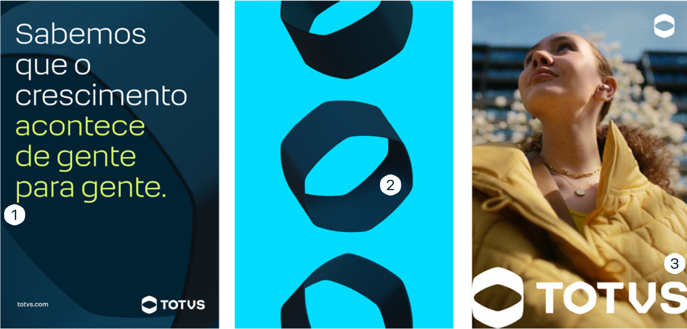

As cores podem destacar trechos de títulos e chamadas — sempre de forma pontual, nunca exagerada.
O grafismo pode ser aplicado mais de uma vez por peça, mostrando diferentes ângulos como elemento de composição.
Com parcimônia, o logo pode assumir uma aplicação “hero” em grandes proporções, como elemento gráfico da peça.